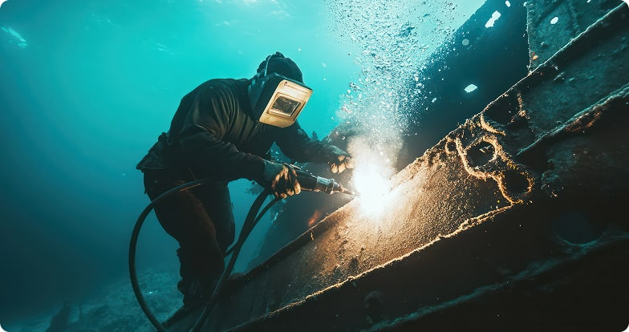

Подводные инженерные сооружения подвергаются значительным испытаниям: они испытывают структурные нагрузки, штормы, волны, а также коррозию от морской воды и эрозию от песчаных потоков. Эти факторы, наряду с внутренними повреждениями, делают их эксплуатацию особенно сложной и рискованной.
Решать возможные проблемы и предотвращать новые помогает подводная сварка. За годы с момента ее изобретения (а было это еще в конце XIX века) технологии сварочных работ под водой совершенствовались, и сегодня входят в арсенал водолазов по всему миру.
С учетом растущих потребностей промышленной сферы, важность подводной сварки и ее адаптации к современным условиям становится критической. Сварочные технологии активно используются при эксплуатации портов, подводных трубопроводов, в кораблестроении и даже на атомных электростанциях.
Методы подводной сварки и способы ее классификации
Выделяют три основные категории в зависимости от условий сварки:
- Мокрая подводная сварка;
- Сухая подводная сварка;
- Локальная сухая подводная сварка;
Глядя в будущее, инженерия предлагает и совершенно новые методы: сварка шпильками, взрывом, подводная электронно-лучевая и экзотермическая сварки. Мы же рассмотрим три наиболее широко используемых.
Мокрая подводная сварка и ее применение
Данная технология позволяет производить сварку непосредственно в водной среде с использованием водонепроницаемого электрода. К преимуществам можно отнести простоту, адаптивность и дешевизну метода. Сварочный аппарат размещается в сухой среде (на судне или берегу), а сварщик работает с электродом под водой.
При этом существует множество минусов:
- Плохая видимость не позволяет обеспечивать ровный сварной шов, нужное его качество и герметичность;
- Быстрое охлаждение негативно влияет на прочность соединения;
- Воздействие водорода приводит к охрупчиванию металла.
При мокрой подводной сварке сложно обеспечить надежность сварных соединений, что ограничивает применение в зонах с высокой ответственностью. Но методика широко применяется для мелких или скоростных ремонтов на небольшой глубине.
Сухая подводная сварка и ее виды
Этот метод подводной сварки проводится внутри специальной камеры или рабочей станции, при этом зона сварки полностью или частично осушается с помощью газа. Давление внутри камеры может быть атмосферным или высоким, что делит сухую сварку еще на две подкатегории.
Чаще всего при сухой подводной сварке водолазы работают с неплавящимся электродом. Используются дуговая сварка и сварка в защитном газе.
Сухая подводная сварка под высоким давлением используется все чаще, поскольку обладает рядом преимуществ, таких как высокое качество сварного шва и оптимальные характеристики соединения – почти как при работе на суше.
Но существуют и минусы:
- Камера для работы имеет ограничения, накладываемые ее конструкцией, т.е. применять ее получается далеко не в любых условиях;
- Лучше всего подходит для сварки конструкций простой правильной формы, таких как крупные трубопроводы, но не для “тонкой работы”;
- Сварщику в сухом боксе стоит быть аккуратным, т.к. газовые смеси при неосторожном обращении могут повредить дыханию.
Сам метод сухой сварки под водой предполагает большие вложения, включая постоянный мониторинг, системы жизнеобеспечения, контроль влажности и других показателей.
Оборудование для сухой подводной сварки также достаточно дорогое. Сварочный аппарат MOD-1 американского производства, способный сваривать трубопроводы диаметром 813 мм, оценивается в сумму до $2 млн.

Сложности применения подводной сварки
Естественно, что сама по себе сварка под водой, хоть и является привычным делом для современных водолазов, предполагает более трудоемкий процесс в сравнении с наземной.
Плохая видимость
Вода сама по себе имеет свойство отражать, поглощать и преломлять свет. В условиях мутной, загрязненной воды с частицами, видимость еще хуже. Сама по себе сварка добавляет проблем: вокруг дуги образуются дым и пузырьки воздуха. Сделать со всем этим что-либо попросту невозможно. Поэтому подводная сварка часто производится практически вслепую, что конечно негативно влияет на ее качество.
Высокая концентрация разрушительного водорода
Дуга при подводной сварке вызывает термическое разложение воды, от чего и образуется большое количество водорода. Его воздействие приводит к образованию трещин и повреждений конструкции и шва.
Ускоренное охлаждение
Вода в сравнении с воздухом имеет повышенную теплопроводимость. Пресная – в несколько раз, морская до 20 раз. Мокрая и локальная сухая сварки проводятся в условиях воздействия холода (особенно в ледяной воде), что приводит к прокаливанию. Избежать этого помогает только сухая подводная сварка.
Высокое давление
С ростом давления (увеличение на 0,1 МПа на каждые 10 метров глубины) столб дуги становится тоньше, ширина шва сужается, а его высота увеличивается.
Кроме того, повышенная плотность проводящей среды затрудняет ионизацию, что приводит к повышению напряжения дуги, снижению ее устойчивости, увеличению количества брызг и дыма.
Невозможность непрерывной сварки
Чаще всего (из-за воздействия перечисленных выше факторов, особенно видимости) подводную сварку приходится выполнять с перерывами, что вредит цельности шва.
Опыт сварщика-водолаза позволяет адаптировать работу ко всеми этим условиям, поэтому для реализации сварочных работ стоит выбирать проверенных специалистов.